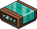
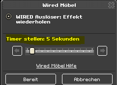
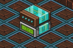
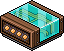

Wired Handbuch für Anfänger
Nr. 6: Effekt wiederholen vs Periodisch lang
Inhalt:
1. Einführung
2. Effekt wiederholen
3. Periodisch lang
1. Einführung
Alle Effekte, die sich nicht direkt auf einen Habbo beziehen (z. B. Möbelrichtung ändern) können mit Effekt wiederholen und Periodisch lang automatisch wiederholt ausgelöst werden. Das bedeutet Effekte, die einen Habbo als Auslöser brauchen (z. B. das Teleport-Wired) können nicht direkt durch einen anderen Wired automatisch ausgelöst werden. Die Unterschiede von Effekt wiederholen und periodisch lang werden hier näher erklärt.
2. Effekt wiederholen
Mit diesem Wired können alle x Sekunden (0,5 bis 60 s) Effekte wiederholt werden.
Inhalt:
1. Einführung
2. Effekt wiederholen
3. Periodisch lang
1. Einführung
Alle Effekte, die sich nicht direkt auf einen Habbo beziehen (z. B. Möbelrichtung ändern) können mit Effekt wiederholen und Periodisch lang automatisch wiederholt ausgelöst werden. Das bedeutet Effekte, die einen Habbo als Auslöser brauchen (z. B. das Teleport-Wired) können nicht direkt durch einen anderen Wired automatisch ausgelöst werden. Die Unterschiede von Effekt wiederholen und periodisch lang werden hier näher erklärt.
2. Effekt wiederholen
Mit diesem Wired können alle x Sekunden (0,5 bis 60 s) Effekte wiederholt werden.

WIRED Auslöser: Effekt wiederholen
Im Einstellungsfenster wird nur der Timer gestellt. Dann wird das Wired immer nach gleichen Zeitabständen den Effekt auslösen.

Standardmäßig ist der Timer auf 5 s gesetzt
Den Timer kann man mit Wireds zurücksetzen, wie das funktioniert wird im erweitertem Wissen erklärt. Die Anwendung dieses Wireds ist sehr umfassend und wird fast immer benötig. Hier ein Beispiel:
Ziel: Eine Farbfliese soll jede Sekunde ihre Farbe wechseln.
Stapel:
Effekt wiederholen; Timer: 1 s
+ Möbelzustände umschalten; fixiert auf Farbfliese
Wichtig hierbei ist, dass die Effektzeit (indem Fall von Möbelzustände umschalten) auf 0 s bleibt. Da diese Zeit nicht direkt die Zeitabstände bestimmen. Die Effektzeit wird dann wichtig, wenn man etwas automatisch aber nur einmal auslösen möchte. Siehe dazu unser DTTF Videotutorial an ab der Zeit 3:45. Dort werden 6 Stapel aufgebaut, die nach dem Auslösen (durch Effekt wiederholen) einmal die Effekte nach unterschiedlicher Zeit ausführen. Die unterschiedlichen Zeiten werden dann mit der Effektzeit geregelt und nicht über Effekt wiederholen. Daher muss man unterscheiden zwischen “Auslösezeit” und “Effektzeit”.
Jetzt folgt eine Beispieleinstellung, die zeigen soll, dass manche Kombinationen “inkompatibel” sind:
Stapel :
Effekt wiederholen
+ zu Möbelstück teleportieren
Jetzt folgt eine Beispieleinstellung, die zeigen soll, dass manche Kombinationen “inkompatibel” sind:
Stapel :
Effekt wiederholen
+ zu Möbelstück teleportieren

Manchmal Blinken Wireds anders auf, wenn sie inkompatibel sind
Im Einstellungsfenster findet man dann in beiden Wireds einen Warnhinweis:
Dort wird der Grund für den Fehler genannt und auch welches Wired Probleme macht. Das ist sehr hilfreich, wenn man größere Stapel verwendet und nicht weiß welches Wired betroffen ist. In diesem Fall geht es deshalb nicht, weil das Wired "Zu Möbelstück teleportieren" nicht weiß welcher Habbo er teleportieren soll. Es muss also ein Auslöser geben der durch einen Habbo (z. B. tritt auf Möbelstück) ausgeführt wird. Dann bezieht sich der Effekt immer auf den der grade ausgelöst hat und wird teleportiert. Bei Effekt wiederholen wird aber kein Habbo benötigt sondern automatisch ausgelöst und somit auch kein Habbo erkannt der teleportiert werden könnte.
3. Periodisch lang
Mit Periodisch lang kann genau das gleiche bewirkt werden wie mit Effekt wiederholen. Der einzige unterschied ist die einstellbare Zeit. Effekte können alle x Sekunden wiederholt werden (5 bis 600 s !). Die Zeit ist also 10 Mal höher.
3. Periodisch lang
Mit Periodisch lang kann genau das gleiche bewirkt werden wie mit Effekt wiederholen. Der einzige unterschied ist die einstellbare Zeit. Effekte können alle x Sekunden wiederholt werden (5 bis 600 s !). Die Zeit ist also 10 Mal höher.

WIRED Auslöser: Periodisch lang
Zusammenfassung, was ist wichtig?
- Es gibt Effekte, die sich auf Habbos beziehen, das bedeutet damit so ein Effekt aktiviert werden kann muss ein Habbo den Effekt auslösen und kann nicht automatisch z. B. mit Effekt wiederholen ausgelöst werden
- Andere Effekte beziehen sich nicht unbedingt auf einen Habbo können aber trotzdem durch alle Auslöser aktiviert werden
- Mit Effekt wiederholen können alle x Sekunden (0,5 bis 60 s) Effekte wiederholt ausgelöst werden
- Mit Periodisch lang können alle x Sekunden (5 bis 600 s) Effekte wiederholt ausgelöst werden
- Die Effektzeit regelt nicht die Zeitabstände ein, das macht nämlich die Auslösezeit
- Die Effektzeit wird hier erst dann wichtig, wenn man etwas automatisch und nur einmal auslösen möchte
- Wenn man einen automatischen Auslöser (z. B. Effekt wiederholen) mit einem Effekt kombiniert, der einen Habbo benötigt um ausgelöst zu werden, ist diese Einstellung "inkompatibel"
- Bei inkompatiblen Stapeln wird bei den betroffenen Wireds im Einstellungsfenster ein Warnhinweis angezeigt